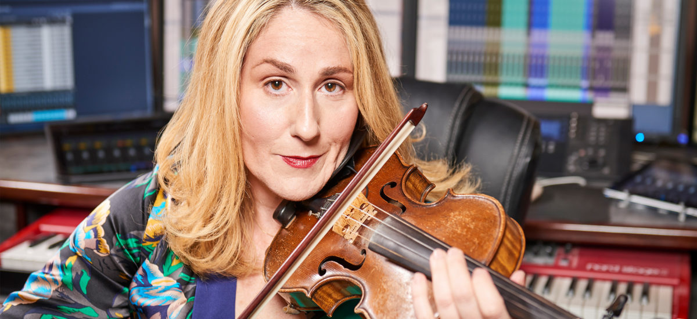
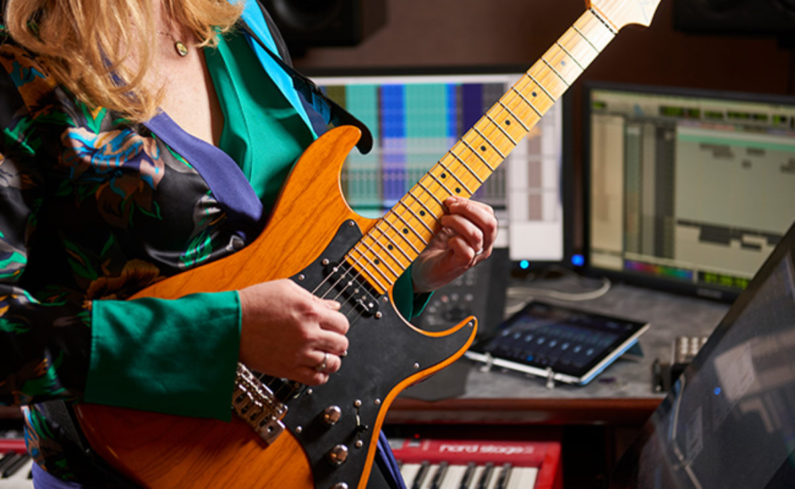
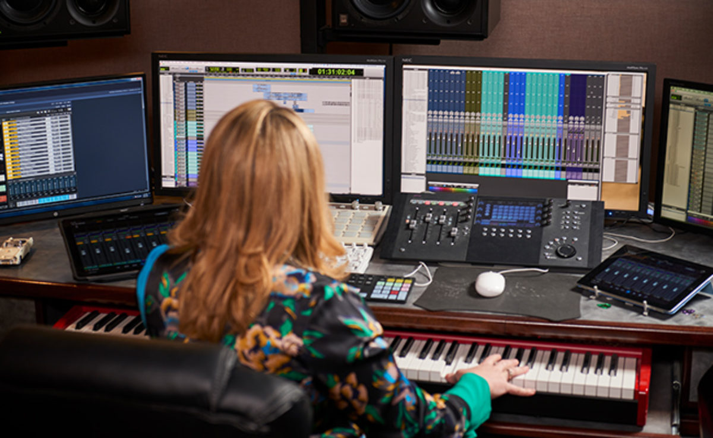
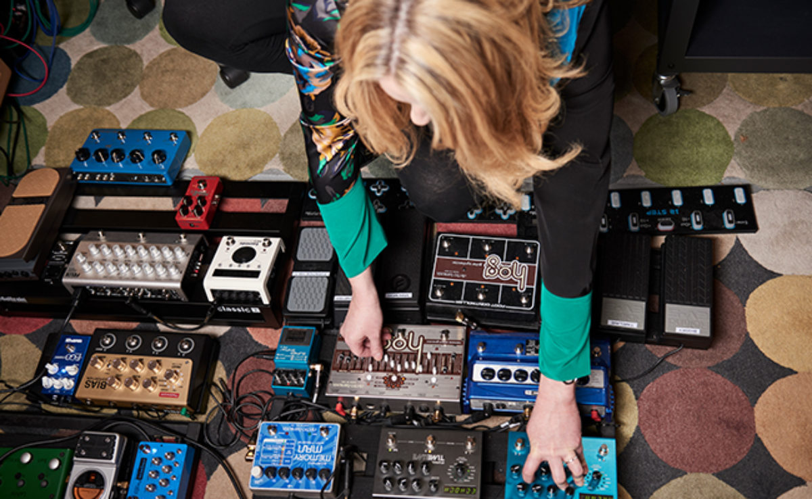
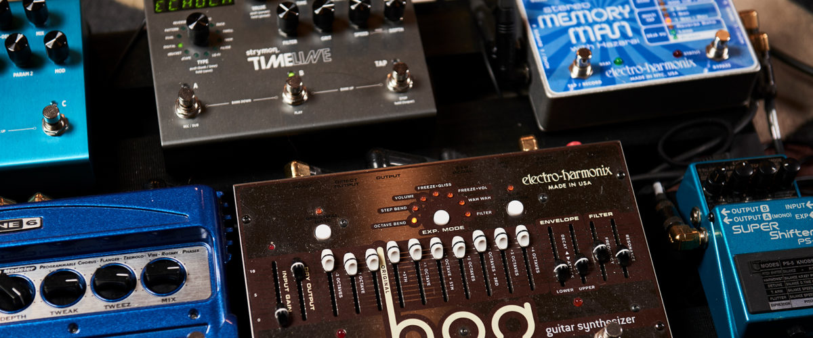

Ronit Kirchman on scoring ‘The Sinner’
{kind=link}

Talking to LA composer Ronit Kirchman about her recent work scoring last year’s standout television smash The Sinner, starring Jessica Biel, Native Instruments finds out how she set the musical tone for the series, in addition which KONTAKT libraries she used, and what sound design techniques were employed along the way.
Ronit Kirchman has composed soundtracks for more than 15 years, and is both a classically trained musician and serious electronic music aficionado. She was tapped by director Derek Simonds to compose a soundtrack she confirms is 90 percent electronic, describing the creative process as “just me and my computer.”
The Sinner tells the story of a young mother who commits a horrific act of violence, yet doesn’t know why. Described as a “whydunnit” instead of a “whodunit”, a sympathetic investigator struggles to unlock the mysteries of her hidden memories, as the show travels deep into her psyche. It’s a psychological journey that is stunningly reflected by its soundtrack. “Derek specifically wanted something that used electronic textures in an interesting way,” Ronit describes. “He wanted the music to be an active participant in the show. He wasn’t just looking for a score that supported the story and didn’t get in the way; it wasn’t that kind of gig.”
If you’ve recently noticed that the television dramas you’re watching are complemented by striking ambient soundtracks, you’re not imagining things. Ronit confirms it is indeed a trend, with an adventurous attitude embraced in the soundtracks of many popular shows. For Ronit, it’s a development that has allowed her to indulge her love of pushing the boundaries of music technology.
“When I began working in soundtracks nearly 20 years ago, I was already heavily immersed in the hardcore programming side of electronic music and IDM. In the beginning I found the crossover between the two worlds, of soundtracks and electronic music, was not so active. However, I would say what is happening in television soundtracks right now is the moment I’ve been waiting years for.”
Kirchman describes soundtracks as a medium that is particularly well equipped to realise some of the more ambitious conceptual possibilities made possible by modern music technology.
“What I’ve noticed is that when people are engaged emotionally with a story, in a musical sense there is a magical thing that happens, because people’s minds are open. They’re not actively judging the music on a structural level, they’re more just engaging with the story emotionally. As a result, as a composer there are some amazing opportunities that open up in terms of pushing musical boundaries. Any sort of experiment with the process is totally fine, as long as you satisfy the end result of amplifying the narrative. Beyond that, it’s wide open.”
“When composers start to experiment with these adventurous electronic soundtracks, and it resonates with audiences, I think showrunners and directors are like, ‘okay we can really go for it.’”
{kind=link}

Inside ronit’s studio
Kirchman’s composing rig is currently comprised of four computers: a sequencer, two sampling machines plus a print computer to run video and to capture stems. Pro Tools was the sequencing platform used on a machine equipped with HDX and Universal Audio cards. The two sampling computers run a server to manage her libraries of sampled and virtual instruments, while KOMPLETE 11 runs on all three machines.
“Komplete gives me a great variety of tools for any project. Kontakt is also the backbone of a huge number of the libraries, and many of the instruments I use. Reaktor is also a go-to platform for me, and my electronic template often includes various NI synths like Absynth, Massive, Monark, Razor, and FM8, as well as various Native Instruments FX as part of my mix.
“My palette for The Sinner was pretty large. In addition to primary Kontakt libraries and instruments, it also included Soniccouture, Audiomodern, Spitfire Audio, Heavyocity, Output, Orchestral Tools, and Sample Logic, among others. The scripting capabilities, reliability and usability of Kontakt has really taken it widespread, and it continues to open the door to amazing hybrid sounds and interesting ways to make music with animated thought and soul. What would film-scoring composers do without it?”
The world of sound design has become an infinite playground
Kirchman says that with sound design already baked into the frame of so many Kontakt instruments being developed, it enables much of the composition to be accomplished within just the instrument itself.
“Kontakt is a dynamic multidimensional environment, because there aren’t any walls between synthesis, sampling, effects and temporal composition. It’s all available to be designed. Given that, it’s always in my process to create my own custom mods and patches of Kontakt instruments, and then map those to my MIDI controllers, before saving these modded instruments to my palette.”
In addition to these ready-made tools some of the most abstract sounds in The Sinner were actually created from scratch herself, with their origins in her seven-string violin, which she says works fabulously for creating core material that can be reappropriated for sonic experimentation.
“I spend a significant chunk of compositional time designing the sounds in the template, dialling in my own sounds and making sure they are available in the state I need them, in the patch itself as well as in MIDI data at the opening of the sequence. As we all know, something as simple as one modulator speed setting can completely change the rhythm, pitch, or timbre. Exact recall really matters!”
{kind=link}

{kind=link}

The psychology of the score
In terms of the conceptual explorations made possible in The Sinner thanks to music technology, Kirchman points to the psychological journey of the protagonist, and how this was reflected in the score.
“As you watch the story, it’s a psychological process of peeling back the layers, and discovering things that you didn’t already know. The viewer experiences this alongside the protagonist herself, who has blocked out large portions of her personal history. Some things you had seen (or heard) earlier, they take on a new meaning in a different context. Musically, there are a lot of fun analogies to that. Memories that arise during the show are strange, shocking and related to trauma. The world of The Sinner has that dramatic shift and contrast, and so in turn does the music. What interests me is having the narrative and soundtrack coexist and reflect each other, without needing to draw attention.”
“I used randomization and complex rhythmic generators on coloristic elements – not just the obvious grooves – because I feel that kind of subtle unpredictability can encourage a deeper listening, and to help the audience tune in. For the show, I loved using some of the newer Spitfire orchestra-based Kontakt instruments, because it allows for a very thick and complex sound, as well as to compose intricate rhythms and to have control of overtones and timbrel evolutions. Adding just one extra effect can offer a huge set of musical options. It doesn’t necessarily have to be complicated.
{kind=link}

“This might involve selecting a nice bandpass filter to run the ambience through, and working with bandwidth, resonance, and frequency over time; mapping an LFO and working with the rate and depth; or varying the parameters of a cleanly programmed delay like Replika XT.”
In addition, Ronit emphasises the modular architecture of REAKTOR as a great platform for instrument building, offering a conceptual and structural flexibility that lends itself to sounding ‘outside of the box’.
“The GRID II Reaktor-based instrument was something that I used early on in our process to create unique groove structures with pitched elements as a basis. It makes it easy to create complex parameter patterns, with different parameters cycling at different rates, as well as unpredictable sonic results for generating ideas.”
For Ronit, the GRID instrument embodies one of the things she loves most about electronic music, in terms of there being more to the story than just the visible relationship between interface and sound output.
“It’s a question that holds a lot of resonance for me in terms of working with a story, particularly stories that involve mystery and psychology. What is the true relationship between the observed cause and effect, and when does this feel meaningful and impactful? When are we fooled by our superficial observations? And in the realm of musical communication, how do we evolve the hard wiring we have as humans regarding movement and sound, and open that up in an integrated and enjoyable way?”
“The world of sound design has become an infinite playground. One of my daily challenges is quieting my inner world and finding my focus, because the different possibilities are just so exciting.”
photo credits: Shane Lopes